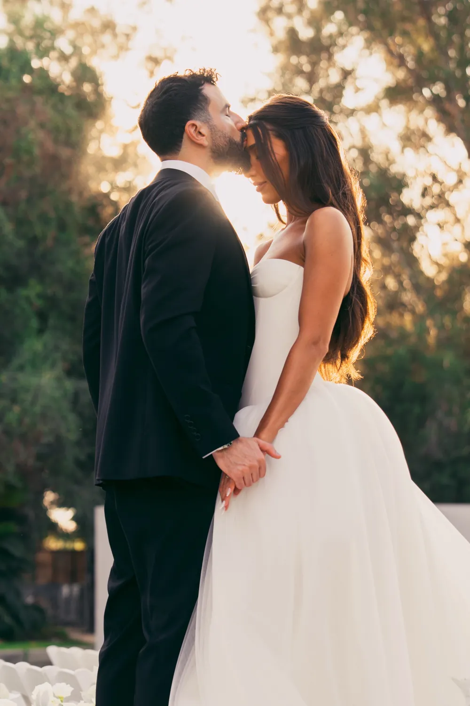
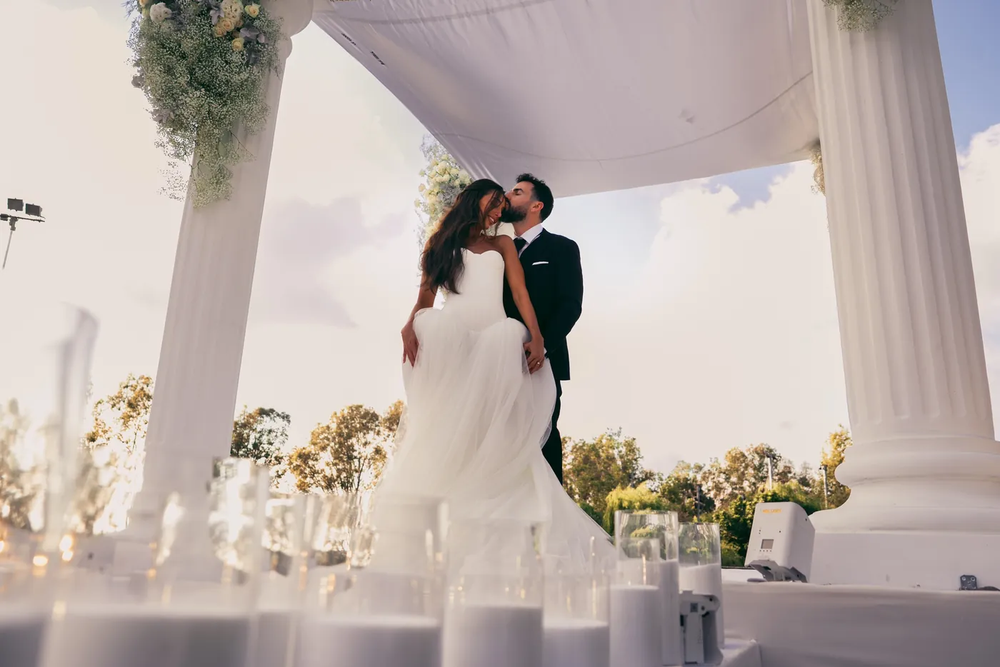
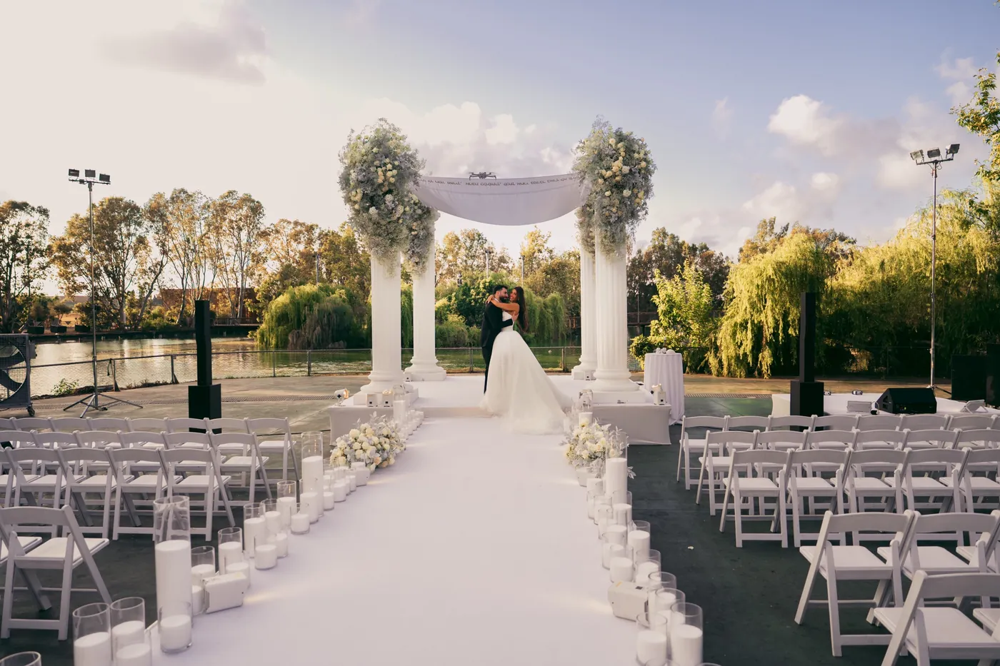
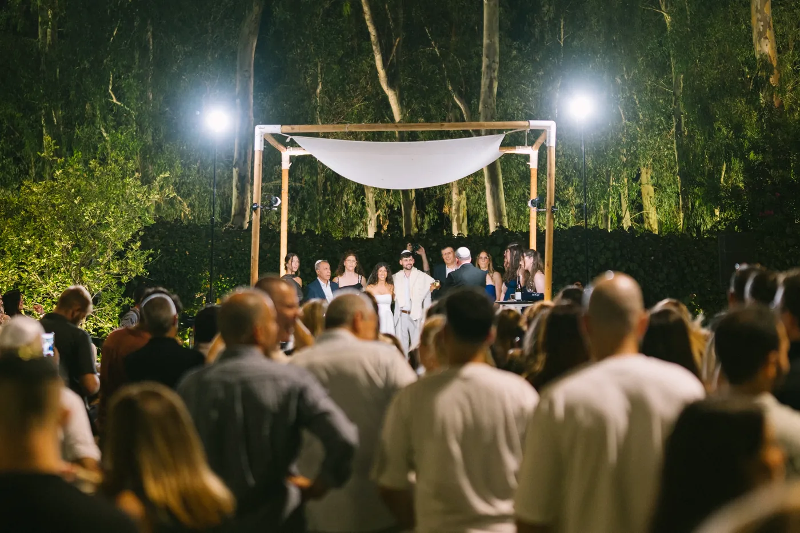

ליד המים
השעה האחרונה של האור · סטילס
באור האחרון של היום אני משתדל לא לכוון הרבה. הם עומדים קרוב, ואני מחכה לרגע שבו הם שוכחים מהמצלמה.




באור האחרון של היום אני משתדל לא לכוון הרבה. הם עומדים קרוב, ואני מחכה לרגע שבו הם שוכחים מהמצלמה.


אני מצלם סטילס ווידאו בחתונות, באירועים, בהופעות, בפסטיבלים ובהפקות.
מה שמושך אותי הוא צילום דוקומנטרי: רגעים ספונטניים, רגש אמיתי, אור מעניין וקומפוזיציות לא צפויות.
ביום עצמו אני מנסה להיות חבר עם מצלמה, כדי שירגישו איתי בנוח ושהיום יישאר סביב הרגש ולא סביב הצילום.
אני מעדיף חתונות אינטימיות ובעלות אופי על פני אירועים ראוותניים.